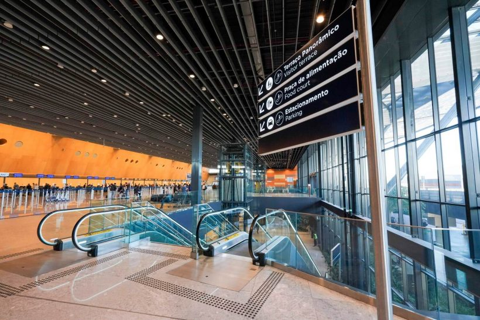

CHAMAR TÁXI
Clique aqui!
Clique aqui!
Florianópolis, conhecida como a Ilha da Magia, é um dos destinos mais encantadores do Brasil. Suas praias, trilhas e natureza preservada atraem turistas durante o ano todo. A cidade oferece uma combinação perfeita entre beleza natural, segurança e qualidade de vida.
Florianópolis encanta por suas paisagens naturais exuberantes. Suas praias de areias claras, águas cristalinas e dunas imponentes criam cenários perfeitos para relaxar e apreciar a natureza. De Barra da Lagoa à Praia do Campeche, cada canto da ilha oferece uma experiência única de contato com a natureza.
A rica cultura de Florianópolis reflete suas raízes açorianas e a história de colonização que moldou a identidade da ilha. Passear pelo centro histórico, visitar museus e participar de festas populares permite vivenciar a tradição e a hospitalidade dos moradores, além de apreciar a arquitetura típica e as lendas locais.
A gastronomia de Florianópolis é um convite aos sentidos. Restaurantes e feiras oferecem pratos que combinam o frescor dos frutos do mar com a influência dos temperos regionais. Essa fusão de sabores reflete a diversidade cultural da ilha e proporciona experiências culinárias memoráveis para visitantes e moradores.
O Aeroporto Internacional Hercílio Luz é o principal ponto de chegada para turistas que desejam explorar as maravilhas de Florianópolis. Com uma infraestrutura moderna, ele conecta a ilha ao mundo, facilitando o acesso às praias, trilhas e atrações culturais. Nosso serviço de táxi garante uma viagem segura e confortável do aeroporto para os principais pontos turísticos.
O Aeroporto Internacional Hercílio Luz (FLN) é moderno, bem localizado e possui estrutura de alto padrão. Recebe voos nacionais e internacionais diariamente, sendo o principal ponto de chegada e saída para quem visita a Ilha de Santa Catarina. Nosso táxi leva você com segurança e conforto do aeroporto até seu destino.
Área de check-in no Aeroporto de Florianópolis. Foto: Ricardo Wolffenbüttel

Clique aqui!
.png)